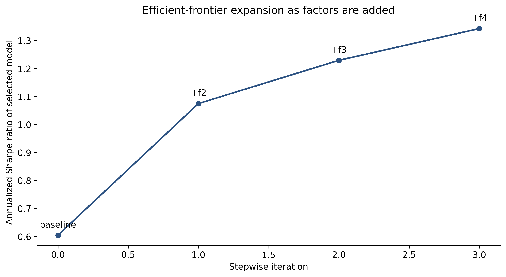

import pandas as pd
import numpy as np
import matplotlib.pyplot as plt
import seaborn as sns
import statsmodels.api as sm
from scipy import stats
from scipy.linalg import inv
import warnings
warnings.filterwarnings('ignore')
plt.rcParams.update({
'figure.figsize': (12, 6),
'figure.dpi': 150,
'font.size': 11,
'axes.spines.top': False,
'axes.spines.right': False
})22 Kiểm định nhân tố theo chuỗi thời gian và theo mặt cắt ngang
Ghi chú
Trong chương này, chúng ta triển khai và so sánh hai cách tiếp cận chủ đạo để kiểm định các mô hình định giá tài sản: hồi quy chuỗi thời gian (các nhân tố có giải thích được lợi nhuận của từng cổ phiếu hoặc danh mục không?) và hồi quy mặt cắt ngang (mức độ phơi nhiễm nhân tố có giải thích được lợi nhuận kỳ vọng không?), đồng thời xây dựng các công cụ chẩn đoán để hiểu khi nào và vì sao hai cách tiếp cận này bất đồng.
Mỗi mô hình nhân tố đưa ra hai khẳng định riêng biệt. Khẳng định chuỗi thời gian là một tập hợp các nhân tố giải thích biến động chung trong lợi nhuận của từng cổ phiếu (tức là khi các nhân tố dịch chuyển, cổ phiếu dịch chuyển theo tỷ lệ với mức độ phơi nhiễm của chúng). Khẳng định mặt cắt ngang là chênh lệch về lợi nhuận trung bình giữa các cổ phiếu được giải thích bởi chênh lệch về mức độ phơi nhiễm nhân tố (tức là cổ phiếu có hệ số tải lớn hơn trên một nhân tố sẽ có lợi nhuận trung bình cao hơn (hoặc thấp hơn) tương ứng với phần bù rủi ro của nhân tố đó).
Hai khẳng định này có liên hệ logic với nhau nhưng khác biệt về mặt thực nghiệm. Một nhân tố có thể giải thích biến động chuỗi thời gian mà không giải thích mặt cắt ngang (nếu phần bù rủi ro của nhân tố bằng không, việc phơi nhiễm với nó không tạo ra chênh lệch lợi nhuận). Ngược lại, một đặc điểm có thể dự báo mặt cắt ngang của lợi nhuận mà không thông qua một nhân tố giao dịch được (nếu đặc điểm đó phản ánh định giá sai chứ không phải rủi ro).
Fama và French (2020) chính thức hóa sự phân biệt này và chỉ ra rằng hai cách tiếp cận có thể cho những câu trả lời khác nhau đáng kể về việc nhân tố nào quan trọng. Goyal và Jegadeesh (2018) đi xa hơn và chứng minh rằng kiểm định chuỗi thời gian và kiểm định mặt cắt ngang có thể bất đồng về cùng một mô hình (chẳng hạn, một nhân tố có thể có alpha chuỗi thời gian có ý nghĩa trong một kiểm định và phần bù mặt cắt ngang không có ý nghĩa trong kiểm định kia, hoặc ngược lại). Hiểu vì sao chúng bất đồng là điều thiết yếu để diễn giải bằng chứng định giá tài sản.
Chương này trang bị cho người đọc cả hai bộ công cụ, áp dụng vào dữ liệu Việt Nam, và xây dựng trực giác về việc khi nào nên dùng cách nào.
22.1 Hai khung kiểm định
22.1.1 Hồi quy chuỗi thời gian
Cách tiếp cận chuỗi thời gian kiểm định xem một mô hình nhân tố có giải thích được lợi nhuận của một tập tài sản kiểm định (thường là các danh mục) hay không. Với mỗi tài sản kiểm định \(i\), ước lượng:
\[ R_{i,t} - R_{f,t} = \alpha_i + \beta_{i,1} f_{1,t} + \beta_{i,2} f_{2,t} + \ldots + \beta_{i,K} f_{K,t} + \varepsilon_{i,t} \tag{22.1}\]
trong đó \(f_{k,t}\) là lợi nhuận của \(K\) nhân tố. Hệ số chặn \(\alpha_i\) đo lường lợi nhuận trung bình của tài sản \(i\) mà các nhân tố không giải thích được. Dưới giả thuyết không rằng mô hình định giá đúng tài sản \(i\), \(\alpha_i = 0\).
Kiểm định đồng thời \(H_0: \alpha_1 = \alpha_2 = \ldots = \alpha_N = 0\) trên tất cả \(N\) tài sản kiểm định được thực hiện bằng thống kê kiểm định Gibbons, Ross, và Shanken (1989) (GRS):
\[ \text{GRS} = \frac{T - N - K}{N} \cdot \frac{1}{1 + \bar{f}' \hat{\Sigma}_f^{-1} \bar{f}} \cdot \hat{\alpha}' \hat{\Sigma}_\varepsilon^{-1} \hat{\alpha} \sim F(N, T - N - K) \tag{22.2}\]
trong đó \(\bar{f}\) là vectơ các trung bình nhân tố, \(\hat{\Sigma}_f\) là ma trận hiệp phương sai của nhân tố, và \(\hat{\Sigma}_\varepsilon\) là ma trận hiệp phương sai của phần dư. Thống kê GRS lớn sẽ bác bỏ mô hình.
22.1.2 Hồi quy mặt cắt ngang (Fama-MacBeth)
Cách tiếp cận mặt cắt ngang của Fama và MacBeth (1973) kiểm định xem mức độ phơi nhiễm nhân tố có được định giá hay không (tức là cổ phiếu có beta cao hơn trên một nhân tố có lợi nhuận trung bình cao hơn hay không). Thủ tục gồm hai giai đoạn:
Giai đoạn 1 (chuỗi thời gian). Với mỗi tài sản, ước lượng các beta nhân tố từ một hồi quy chuỗi thời gian trên cửa sổ trượt hoặc toàn mẫu:
\[ R_{i,t} - R_{f,t} = \alpha_i + \beta_{i,1} f_{1,t} + \ldots + \beta_{i,K} f_{K,t} + \varepsilon_{i,t} \tag{22.3}\]
Giai đoạn 2 (mặt cắt ngang). Mỗi tháng \(t\), hồi quy mặt cắt ngang của lợi nhuận vượt mức thực tế theo các beta đã ước lượng:
\[ R_{i,t} - R_{f,t} = \gamma_{0,t} + \gamma_{1,t} \hat{\beta}_{i,1} + \ldots + \gamma_{K,t} \hat{\beta}_{i,K} + \eta_{i,t} \tag{22.4}\]
Các trung bình theo thời gian \(\bar{\gamma}_k = \frac{1}{T} \sum_t \gamma_{k,t}\) ước lượng các phần bù rủi ro, và các sai số chuẩn sử dụng độ lệch chuẩn theo thời gian của \(\{\gamma_{k,t}\}\).
22.1.3 Những khác biệt chính
| Khía cạnh | Chuỗi thời gian | Mặt cắt ngang |
|---|---|---|
| Kiểm định điều gì | Các nhân tố có giải thích biến động lợi nhuận không? | Mức độ phơi nhiễm nhân tố có giải thích lợi nhuận trung bình không? |
| Thống kê then chốt | Alpha (hệ số chặn) | Phần bù rủi ro (\(\gamma\)) |
| Kiểm định đồng thời | Kiểm định F GRS | Chi bình phương trên các \(\gamma\) |
| Tài sản kiểm định | Danh mục (thường là vậy) | Cổ phiếu riêng lẻ hoặc danh mục |
| Nhân tố | Phải là lợi nhuận giao dịch được | Có thể không giao dịch được (vĩ mô, đặc điểm) |
| Giả thuyết không | \(\alpha_i = 0\) với mọi \(i\) | \(\gamma_k\) bằng lợi nhuận trung bình của nhân tố |
| Sai số trong biến độc lập (EIV) | Không phải vấn đề (nhân tố quan sát được) | Beta ước lượng gây ra thiên lệch EIV |
22.2 Xây dựng dữ liệu
from datacore import DataCoreClient
client = DataCoreClient()
# Factor returns
factors = client.get_factor_returns(
market='vietnam',
start_date='2008-01-01',
end_date='2024-12-31',
factors=['mkt_excess', 'smb', 'hml', 'rmw', 'cma', 'wml']
)
factors['month_end'] = pd.to_datetime(factors['month_end'])
factors = factors.set_index('month_end')
# Test portfolios: 25 size-BM portfolios (5x5 independent sorts)
test_portfolios_25 = client.get_sorted_portfolios(
market='vietnam',
sort_vars=['size', 'bm'],
n_groups=[5, 5],
start_date='2008-01-01',
end_date='2024-12-31',
weighting='value'
)
# Test portfolios: 25 size-momentum portfolios
test_portfolios_mom = client.get_sorted_portfolios(
market='vietnam',
sort_vars=['size', 'momentum_12_2'],
n_groups=[5, 5],
start_date='2008-01-01',
end_date='2024-12-31',
weighting='value'
)
# Test portfolios: 10 industry portfolios
test_portfolios_ind = client.get_sorted_portfolios(
market='vietnam',
sort_vars=['icb_sector'],
n_groups=[10],
start_date='2008-01-01',
end_date='2024-12-31',
weighting='value'
)
# Monthly individual stock returns for Fama-MacBeth
stock_returns = client.get_monthly_returns(
exchanges=['HOSE', 'HNX'],
start_date='2008-01-01',
end_date='2024-12-31',
include_delisted=True,
fields=['ticker', 'month_end', 'monthly_return', 'market_cap']
)
# Risk-free rate
rf = client.get_risk_free_rate(
start_date='2008-01-01',
end_date='2024-12-31',
frequency='monthly'
)
print(f"Factor months: {len(factors)}")
print(f"25 Size-BM portfolios: {test_portfolios_25.shape}")
print(f"25 Size-Mom portfolios: {test_portfolios_mom.shape}")
print(f"10 Industry portfolios: {test_portfolios_ind.shape}")
print(f"Stock-months: {len(stock_returns):,}")# Convert test portfolios to excess returns
# Each portfolio set is a DataFrame: rows = months, columns = portfolios
def prepare_test_assets(port_df, rf_df):
"""Convert portfolio returns to excess returns matrix."""
port = port_df.set_index('month_end')
rf_aligned = rf_df.set_index('month_end')['rf'].reindex(port.index)
excess = port.subtract(rf_aligned, axis=0)
return excess.dropna()
excess_25_bm = prepare_test_assets(test_portfolios_25, rf)
excess_25_mom = prepare_test_assets(test_portfolios_mom, rf)
excess_10_ind = prepare_test_assets(test_portfolios_ind, rf)
print(f"Size-BM test assets: {excess_25_bm.shape[1]} portfolios, "
f"{excess_25_bm.shape[0]} months")
print(f"Size-Mom test assets: {excess_25_mom.shape[1]} portfolios, "
f"{excess_25_mom.shape[0]} months")
print(f"Industry test assets: {excess_10_ind.shape[1]} portfolios, "
f"{excess_10_ind.shape[0]} months")22.3 Các kiểm định chuỗi thời gian
22.3.1 Hồi quy chuỗi thời gian toàn mẫu
Chúng ta bắt đầu bằng việc chạy các hồi quy chuỗi thời gian toàn mẫu của từng danh mục kiểm định theo mô hình năm nhân tố Fama-French cộng động lượng:
def time_series_regressions(excess_returns, factor_df, factor_cols,
cov_type='HAC', maxlags=6):
"""
Run time-series regressions of test assets on factors.
Returns DataFrame of alphas, betas, t-stats, and R-squared.
"""
# Align dates
common = excess_returns.index.intersection(factor_df.index)
Y = excess_returns.loc[common]
X = factor_df.loc[common, factor_cols]
X_const = sm.add_constant(X)
results = {}
for col in Y.columns:
y = Y[col].dropna()
x = X_const.loc[y.index]
model = sm.OLS(y, x).fit(
cov_type=cov_type,
cov_kwds={'maxlags': maxlags} if cov_type == 'HAC' else {}
)
result = {
'alpha': model.params['const'],
'alpha_t': model.tvalues['const'],
'alpha_p': model.pvalues['const'],
'r_squared': model.rsquared,
'r_squared_adj': model.rsquared_adj
}
for f in factor_cols:
result[f'beta_{f}'] = model.params[f]
result[f't_{f}'] = model.tvalues[f]
results[col] = result
return pd.DataFrame(results).T
# Define models to test
models = {
'CAPM': ['mkt_excess'],
'FF3': ['mkt_excess', 'smb', 'hml'],
'FF5': ['mkt_excess', 'smb', 'hml', 'rmw', 'cma'],
'FF5+WML': ['mkt_excess', 'smb', 'hml', 'rmw', 'cma', 'wml'],
}
# Run for 25 Size-BM portfolios
print("Time-Series Alphas: 25 Size-BM Portfolios")
print("=" * 60)
ts_results = {}
for model_name, factor_cols in models.items():
result = time_series_regressions(
excess_25_bm, factors, factor_cols
)
ts_results[model_name] = result
mean_alpha = result['alpha'].mean() * 12
mean_abs_alpha = result['alpha'].abs().mean() * 12
pct_sig = (result['alpha_p'] < 0.05).mean()
mean_r2 = result['r_squared'].mean()
print(f"\n{model_name}:")
print(f" Mean alpha (ann.): {mean_alpha:.4f}")
print(f" Mean |alpha| (ann.): {mean_abs_alpha:.4f}")
print(f" % sig. at 5%: {pct_sig:.1%}")
print(f" Mean R²: {mean_r2:.3f}")22.3.2 Kiểm định GRS
def grs_test(excess_returns, factor_df, factor_cols):
"""
Gibbons, Ross, Shanken (1989) test of H0: all alphas = 0.
Returns GRS statistic, p-value, and related diagnostics.
"""
common = excess_returns.index.intersection(factor_df.index)
Y = excess_returns.loc[common].values # T x N
F = factor_df.loc[common, factor_cols].values # T x K
T, N = Y.shape
K = F.shape[1]
# Add constant and run OLS for each asset
F_const = np.column_stack([np.ones(T), F])
# OLS: beta = (X'X)^-1 X'Y
XtX_inv = inv(F_const.T @ F_const)
B = XtX_inv @ F_const.T @ Y # (K+1) x N
alpha = B[0, :] # N-vector of intercepts
residuals = Y - F_const @ B # T x N
# Residual covariance matrix
Sigma_eps = residuals.T @ residuals / (T - K - 1)
# Factor mean and covariance
f_bar = F.mean(axis=0)
Sigma_f = np.cov(F, rowvar=False, ddof=1)
# GRS statistic
Sigma_eps_inv = inv(Sigma_eps)
Sigma_f_inv = inv(Sigma_f) if K > 1 else np.array([[1 / Sigma_f]])
sharpe_sq_alpha = alpha @ Sigma_eps_inv @ alpha
sharpe_sq_f = f_bar @ Sigma_f_inv @ f_bar if K > 1 else (f_bar[0] ** 2 / Sigma_f)
grs_stat = ((T - N - K) / N) * (1 / (1 + sharpe_sq_f)) * sharpe_sq_alpha
# p-value from F distribution
p_value = 1 - stats.f.cdf(grs_stat, N, T - N - K)
# Additional diagnostics
# Sharpe ratio of tangency portfolio of factors
sr_factors = np.sqrt(sharpe_sq_f)
# Sharpe ratio of tangency portfolio including alphas
sr_alpha = np.sqrt(sharpe_sq_alpha + sharpe_sq_f)
return {
'GRS': grs_stat,
'p_value': p_value,
'df1': N,
'df2': T - N - K,
'mean_abs_alpha': np.abs(alpha).mean(),
'sr_factors': sr_factors,
'sr_alpha_plus_factors': sr_alpha,
'sr_improvement': sr_alpha - sr_factors,
'T': T, 'N': N, 'K': K
}
# Run GRS for each model on each set of test assets
print("GRS Test Results")
print("=" * 80)
print(f"{'Model':<12} {'Test Assets':<18} {'GRS':>8} {'p-value':>10} "
f"{'|α| ann':>10} {'SR(f)':>8} {'SR(α+f)':>8}")
print("-" * 80)
test_asset_sets = {
'25 Size-BM': excess_25_bm,
'25 Size-Mom': excess_25_mom,
'10 Industry': excess_10_ind
}
grs_all = {}
for model_name, factor_cols in models.items():
for ta_name, ta_data in test_asset_sets.items():
key = f"{model_name}_{ta_name}"
result = grs_test(ta_data, factors, factor_cols)
grs_all[key] = result
print(f"{model_name:<12} {ta_name:<18} "
f"{result['GRS']:>8.2f} {result['p_value']:>10.4f} "
f"{result['mean_abs_alpha']*12:>10.4f} "
f"{result['sr_factors']:>8.3f} "
f"{result['sr_alpha_plus_factors']:>8.3f}")ff5_result = ts_results['FF5']
# Reshape alphas into 5x5 matrix
alpha_matrix = ff5_result['alpha'].values.reshape(5, 5) * 12 * 100
t_matrix = ff5_result['alpha_t'].values.reshape(5, 5)
fig, axes = plt.subplots(1, 2, figsize=(14, 5))
# Panel A: Alpha magnitudes
im = axes[0].imshow(alpha_matrix, cmap='RdBu_r', aspect='auto',
vmin=-np.max(np.abs(alpha_matrix)),
vmax=np.max(np.abs(alpha_matrix)))
for i in range(5):
for j in range(5):
sig = '*' if abs(t_matrix[i, j]) > 2 else ''
axes[0].text(j, i, f'{alpha_matrix[i, j]:.1f}{sig}',
ha='center', va='center', fontsize=9,
color='white' if abs(alpha_matrix[i, j]) > 3 else 'black')
axes[0].set_xticks(range(5))
axes[0].set_xticklabels(['Growth', '2', '3', '4', 'Value'])
axes[0].set_yticks(range(5))
axes[0].set_yticklabels(['Small', '2', '3', '4', 'Big'])
axes[0].set_xlabel('Book-to-Market')
axes[0].set_ylabel('Size')
axes[0].set_title('Panel A: FF5 Alphas (% ann.)')
plt.colorbar(im, ax=axes[0], label='Alpha (% ann.)')
# Panel B: R-squared
r2_matrix = ff5_result['r_squared'].values.reshape(5, 5) * 100
im2 = axes[1].imshow(r2_matrix, cmap='YlGn', aspect='auto',
vmin=50, vmax=100)
for i in range(5):
for j in range(5):
axes[1].text(j, i, f'{r2_matrix[i, j]:.0f}%',
ha='center', va='center', fontsize=9)
axes[1].set_xticks(range(5))
axes[1].set_xticklabels(['Growth', '2', '3', '4', 'Value'])
axes[1].set_yticks(range(5))
axes[1].set_yticklabels(['Small', '2', '3', '4', 'Big'])
axes[1].set_xlabel('Book-to-Market')
axes[1].set_ylabel('Size')
axes[1].set_title('Panel B: R-squared (%)')
plt.colorbar(im2, ax=axes[1], label='R² (%)')
plt.tight_layout()
plt.show()22.3.3 So sánh mô hình qua GRS
fig, ax = plt.subplots(figsize=(12, 5))
model_names = list(models.keys())
ta_names = list(test_asset_sets.keys())
x = np.arange(len(model_names))
width = 0.25
colors_ta = ['#2C5F8A', '#C0392B', '#27AE60']
for i, ta_name in enumerate(ta_names):
grs_vals = [grs_all[f"{m}_{ta_name}"]['GRS'] for m in model_names]
bars = ax.bar(x + i * width, grs_vals, width, alpha=0.85,
color=colors_ta[i], label=ta_name, edgecolor='white')
ax.set_xticks(x + width)
ax.set_xticklabels(model_names)
ax.set_ylabel('GRS Statistic')
ax.set_title('GRS Test: Model Comparison Across Test Asset Sets')
ax.legend()
# Add critical value line (5% significance)
# Approximate: depends on N, T, K
ax.axhline(y=1.8, color='gray', linestyle='--', linewidth=1,
label='~5% critical value')
plt.tight_layout()
plt.show()22.4 Các kiểm định mặt cắt ngang
22.4.1 Fama-MacBeth với tài sản kiểm định là danh mục
Chúng ta triển khai thủ tục hai bước Fama-MacBeth sử dụng 25 danh mục quy mô-BM làm tài sản kiểm định:
def fama_macbeth_two_pass(excess_returns, factor_df, factor_cols,
beta_window='full', rolling_window=60,
shanken_correction=True):
"""
Fama-MacBeth (1973) two-pass cross-sectional regression.
Parameters
----------
beta_window : str
'full' for full-sample betas, 'rolling' for rolling betas.
shanken_correction : bool
Apply Shanken (1992) errors-in-variables correction.
Returns
-------
Dictionary with estimated risk premia, t-statistics, and diagnostics.
"""
common = excess_returns.index.intersection(factor_df.index)
Y = excess_returns.loc[common]
F = factor_df.loc[common, factor_cols]
T = len(common)
N = Y.shape[1]
K = len(factor_cols)
months = sorted(common)
# ===== STAGE 1: Estimate betas =====
if beta_window == 'full':
# Full-sample betas (simpler, used in GRS context)
F_const = sm.add_constant(F)
betas = {}
for col in Y.columns:
model = sm.OLS(Y[col], F_const).fit()
betas[col] = {f: model.params[f] for f in factor_cols}
beta_df = pd.DataFrame(betas).T # N x K
# Same betas used every month
beta_by_month = {m: beta_df for m in months}
elif beta_window == 'rolling':
# Rolling betas (more realistic, avoids look-ahead)
beta_by_month = {}
for t_idx in range(rolling_window, T):
month = months[t_idx]
window_start = months[t_idx - rolling_window]
Y_win = Y.loc[window_start:months[t_idx - 1]]
F_win = sm.add_constant(F.loc[window_start:months[t_idx - 1]])
betas_t = {}
for col in Y.columns:
y = Y_win[col].dropna()
x = F_win.loc[y.index]
if len(y) < 24:
betas_t[col] = {f: np.nan for f in factor_cols}
continue
model = sm.OLS(y, x).fit()
betas_t[col] = {f: model.params[f] for f in factor_cols}
beta_by_month[month] = pd.DataFrame(betas_t).T
# ===== STAGE 2: Cross-sectional regressions =====
gamma_list = []
for month in months:
if month not in beta_by_month:
continue
betas_t = beta_by_month[month]
returns_t = Y.loc[month]
# Align
valid = betas_t.dropna().index.intersection(returns_t.dropna().index)
if len(valid) < K + 5:
continue
y = returns_t[valid].values
X = sm.add_constant(betas_t.loc[valid, factor_cols].values)
try:
model = sm.OLS(y, X).fit()
gammas = {'month': month, 'gamma_0': model.params[0]}
for j, f in enumerate(factor_cols):
gammas[f'gamma_{f}'] = model.params[j + 1]
gammas['r_squared'] = model.rsquared
gammas['n_assets'] = len(valid)
gamma_list.append(gammas)
except Exception:
pass
gamma_df = pd.DataFrame(gamma_list)
if len(gamma_df) == 0:
return None
# ===== INFERENCE =====
# Time-series averages of gammas
gamma_cols = ['gamma_0'] + [f'gamma_{f}' for f in factor_cols]
results = {}
for col in gamma_cols:
g = gamma_df[col]
mean = g.mean()
se_fm = g.std() / np.sqrt(len(g))
t_fm = mean / se_fm if se_fm > 0 else np.nan
results[col] = {
'estimate': mean,
'se_fm': se_fm,
't_fm': t_fm,
}
# Shanken (1992) correction for errors-in-variables
if shanken_correction and beta_window == 'full':
Sigma_f = F[factor_cols].cov().values
# Shanken correction factor: (1 + lambda' Sigma_f^-1 lambda)
gamma_factor = np.array([results[f'gamma_{f}']['estimate']
for f in factor_cols])
try:
Sigma_f_inv = inv(Sigma_f)
c_shanken = 1 + gamma_factor @ Sigma_f_inv @ gamma_factor
except Exception:
c_shanken = 1.0
for col in gamma_cols:
results[col]['se_shanken'] = results[col]['se_fm'] * np.sqrt(c_shanken)
results[col]['t_shanken'] = (results[col]['estimate']
/ results[col]['se_shanken']
if results[col]['se_shanken'] > 0 else np.nan)
# Compare estimated premia to factor mean returns
factor_means = F[factor_cols].mean()
for f in factor_cols:
results[f'gamma_{f}']['factor_mean'] = factor_means[f]
# Cross-sectional R-squared
results['avg_cs_r2'] = gamma_df['r_squared'].mean()
return {
'results': pd.DataFrame(results).T,
'gamma_ts': gamma_df,
'beta_df': beta_by_month.get(months[-1], None)
}
# Run Fama-MacBeth for each model
print("Fama-MacBeth Cross-Sectional Results: 25 Size-BM Portfolios")
print("=" * 80)
fm_results = {}
for model_name, factor_cols in models.items():
for beta_type in ['full', 'rolling']:
key = f"{model_name}_{beta_type}"
fm = fama_macbeth_two_pass(
excess_25_bm, factors, factor_cols,
beta_window=beta_type,
rolling_window=60,
shanken_correction=(beta_type == 'full')
)
if fm is None:
continue
fm_results[key] = fm
print(f"\n{model_name} (betas: {beta_type}):")
res = fm['results']
for idx, row in res.iterrows():
if 'gamma' in idx:
t_col = 't_shanken' if 't_shanken' in row and pd.notna(row.get('t_shanken')) else 't_fm'
f_mean = row.get('factor_mean', '')
f_str = f" f_mean={f_mean:.4f}" if isinstance(f_mean, float) else ""
print(f" {idx:<16}: γ = {row['estimate']:.5f}, "
f"t = {row[t_col]:.2f}{f_str}")
if 'avg_cs_r2' in res.index:
print(f" Avg CS R²: {res.loc['avg_cs_r2', 'estimate']:.3f}")22.4.2 Hiệu chỉnh Shanken
Hiệu chỉnh Shanken (1992) giải quyết vấn đề sai số trong biến độc lập (EIV) vốn có trong thủ tục hai bước. Vì các beta được ước lượng có sai số ở Giai đoạn 1, các sai số chuẩn ở Giai đoạn 2 bị ước lượng thấp hơn thực tế. Hiệu chỉnh này làm tăng các sai số chuẩn theo một hệ số phụ thuộc vào các phần bù rủi ro ước lượng và ma trận hiệp phương sai của nhân tố:
\[ \text{Var}(\hat{\gamma})_{\text{Shanken}} = \text{Var}(\hat{\gamma})_{\text{FM}} \times \left(1 + \hat{\gamma}' \hat{\Sigma}_f^{-1} \hat{\gamma}\right) \tag{22.5}\]
print("Impact of Shanken Correction on t-statistics:")
print(f"{'Model':<12} {'Factor':<12} {'t (FM)':>10} {'t (Shanken)':>12} {'Ratio':>8}")
print("-" * 54)
for model_name in models:
key = f"{model_name}_full"
if key not in fm_results:
continue
res = fm_results[key]['results']
for idx, row in res.iterrows():
if 'gamma_' in str(idx) and idx != 'gamma_0':
t_fm = row.get('t_fm', np.nan)
t_sh = row.get('t_shanken', np.nan)
ratio = t_fm / t_sh if pd.notna(t_sh) and t_sh != 0 else np.nan
factor_name = idx.replace('gamma_', '')
print(f"{model_name:<12} {factor_name:<12} {t_fm:>10.2f} "
f"{t_sh:>12.2f} {ratio:>8.2f}")22.4.3 Fama-MacBeth với cổ phiếu riêng lẻ
Sử dụng cổ phiếu riêng lẻ thay vì danh mục làm tài sản kiểm định giúp tránh phê phán của Lewellen, Nagel, và Shanken (2010) rằng các danh mục sắp xếp tạo ra cấu trúc nhân tố mạnh một cách nhân tạo:
def fama_macbeth_individual(stock_df, factor_df, factor_cols,
beta_window=60, min_obs=36,
min_stocks=100):
"""
Fama-MacBeth with individual stocks and rolling betas.
"""
stock_df = stock_df.copy()
stock_df['month_end'] = pd.to_datetime(stock_df['month_end'])
factor_df = factor_df.copy()
months = sorted(stock_df['month_end'].unique())
# Pre-compute rolling betas for all stocks
gamma_list = []
for t_idx, month in enumerate(months):
if t_idx < beta_window:
continue
window_months = months[t_idx - beta_window:t_idx]
# Get betas for each stock from rolling window
betas_t = {}
window_data = stock_df[stock_df['month_end'].isin(window_months)]
for ticker, group in window_data.groupby('ticker'):
if len(group) < min_obs:
continue
y = group.set_index('month_end')['monthly_return']
x = factor_df.loc[y.index, factor_cols]
x = sm.add_constant(x)
valid = y.index.intersection(x.index)
if len(valid) < min_obs:
continue
try:
model = sm.OLS(y[valid], x.loc[valid]).fit()
betas_t[ticker] = {f: model.params[f] for f in factor_cols}
except Exception:
pass
if len(betas_t) < min_stocks:
continue
beta_df = pd.DataFrame(betas_t).T
# Current month returns
current = stock_df[stock_df['month_end'] == month]
current = current.set_index('ticker')
# Align
valid_tickers = beta_df.index.intersection(current.index)
if len(valid_tickers) < min_stocks:
continue
y = current.loc[valid_tickers, 'monthly_return'].values
X = sm.add_constant(beta_df.loc[valid_tickers].values)
try:
model = sm.OLS(y, X).fit()
gammas = {'month': month, 'gamma_0': model.params[0]}
for j, f in enumerate(factor_cols):
gammas[f'gamma_{f}'] = model.params[j + 1]
gammas['n_stocks'] = len(valid_tickers)
gammas['r_squared'] = model.rsquared
gamma_list.append(gammas)
except Exception:
pass
gamma_df = pd.DataFrame(gamma_list)
# Inference
gamma_cols = ['gamma_0'] + [f'gamma_{f}' for f in factor_cols]
summary = {}
for col in gamma_cols:
g = gamma_df[col]
mean = g.mean()
se = g.std() / np.sqrt(len(g))
t = mean / se if se > 0 else np.nan
summary[col] = {'estimate': mean, 'se': se, 't': t}
summary['avg_n_stocks'] = gamma_df['n_stocks'].mean()
summary['avg_cs_r2'] = gamma_df['r_squared'].mean()
return pd.DataFrame(summary).T, gamma_df
# Run for FF5
print("\nFama-MacBeth with Individual Stocks (FF5):")
fm_ind_results, fm_ind_gamma = fama_macbeth_individual(
stock_returns, factors,
['mkt_excess', 'smb', 'hml', 'rmw', 'cma'],
beta_window=60, min_obs=36
)
print(fm_ind_results.round(4).to_string())22.5 Khi nào các kiểm định bất đồng?
22.5.1 Các nguồn bất đồng về mặt lý thuyết
Goyal và Jegadeesh (2018) xác định ba nguồn gây ra chênh lệch giữa kiểm định chuỗi thời gian và kiểm định mặt cắt ngang:
1. Cấu trúc nhân tố của tài sản kiểm định. Nếu các tài sản kiểm định có cấu trúc nhân tố mạnh (như các danh mục sắp xếp vốn có do cách xây dựng), \(R^2\) mặt cắt ngang sẽ cao bất kể các nhân tố có thực sự định giá tài sản hay không. Lewellen, Nagel, và Shanken (2010) chỉ ra rằng ngay cả các nhân tố ngẫu nhiên cũng có thể đạt \(R^2\) mặt cắt ngang cao khi tài sản kiểm định là các danh mục sắp xếp theo quy mô-BM, vì những danh mục này có cấu trúc tuyến tính mạnh trong không gian quy mô-giá trị.
2. Biến động theo thời gian của beta. Hồi quy chuỗi thời gian giả định beta không đổi. Nếu beta thay đổi theo thời gian và đồng biến động với phần bù rủi ro của nhân tố, alpha chuỗi thời gian vô điều kiện có thể khác không ngay cả khi mô hình có điều kiện đúng (Jagannathan và Wang 1996).
3. Phần bù rủi ro bị đặc tả sai. Hồi quy mặt cắt ngang Fama-MacBeth ước lượng phần bù rủi ro từ dữ liệu. Hồi quy chuỗi thời gian ngầm đặt phần bù rủi ro bằng lợi nhuận trung bình mẫu của nhân tố. Khi hai giá trị này khác nhau (chẳng hạn vì nhân tố không phải là đại diện hoàn hảo cho rủi ro nền tảng), hai cách tiếp cận sẽ bất đồng.
22.5.2 So sánh thực nghiệm cho Việt Nam
# For FF5 on 25 Size-BM portfolios:
# Time-series: alpha from OLS regression
# Cross-section: pricing error from Fama-MacBeth
ts_alphas = ts_results['FF5']['alpha'].values * 12 # Annualized
ts_names = ts_results['FF5'].index.tolist()
# Cross-sectional pricing errors:
# Predicted return = beta' * estimated_gamma
# Pricing error = actual mean return - predicted
fm_full = fm_results.get('FF5_full')
if fm_full:
betas = fm_full['beta_df'] # N x K
factor_cols = ['mkt_excess', 'smb', 'hml', 'rmw', 'cma']
gammas = np.array([fm_full['results'].loc[f'gamma_{f}', 'estimate']
for f in factor_cols])
gamma_0 = fm_full['results'].loc['gamma_0', 'estimate']
actual_means = excess_25_bm.mean() * 12 # Annualized
predicted = (gamma_0 + betas[factor_cols].values @ gammas) * 12
cs_errors = actual_means.values - predictedfig, axes = plt.subplots(1, 2, figsize=(14, 5))
# Panel A: TS alpha vs CS pricing error
if fm_full:
axes[0].scatter(ts_alphas * 100, cs_errors * 100,
color='#2C5F8A', s=60, alpha=0.7, edgecolors='white')
lim = max(np.max(np.abs(ts_alphas)), np.max(np.abs(cs_errors))) * 100 + 1
axes[0].plot([-lim, lim], [-lim, lim], 'k--', linewidth=1)
axes[0].plot([-lim, lim], [0, 0], color='gray', linewidth=0.5)
axes[0].plot([0, 0], [-lim, lim], color='gray', linewidth=0.5)
axes[0].set_xlabel('Time-Series Alpha (% ann.)')
axes[0].set_ylabel('Cross-Sectional Pricing Error (% ann.)')
axes[0].set_title('Panel A: TS Alpha vs CS Pricing Error')
# Correlation
rho = np.corrcoef(ts_alphas, cs_errors)[0, 1]
axes[0].text(0.05, 0.95, f'ρ = {rho:.2f}',
transform=axes[0].transAxes, fontsize=11)
# Panel B: Actual vs Predicted (CS)
if fm_full:
axes[1].scatter(predicted * 100, actual_means.values * 100,
color='#C0392B', s=60, alpha=0.7, edgecolors='white')
lim2 = max(np.max(np.abs(predicted)), np.max(np.abs(actual_means))) * 100 + 2
axes[1].plot([-5, lim2], [-5, lim2], 'k--', linewidth=1)
axes[1].set_xlabel('Predicted Average Return (% ann.)')
axes[1].set_ylabel('Actual Average Return (% ann.)')
axes[1].set_title('Panel B: Actual vs Predicted (FM Cross-Section)')
# CS R-squared
ss_res = np.sum((actual_means.values - predicted) ** 2)
ss_tot = np.sum((actual_means.values - actual_means.values.mean()) ** 2)
r2_cs = 1 - ss_res / ss_tot
axes[1].text(0.05, 0.95, f'CS R² = {r2_cs:.2f}',
transform=axes[1].transAxes, fontsize=11)
plt.tight_layout()
plt.show()22.5.3 Phê phán Lewellen-Nagel-Shanken
Lewellen, Nagel, và Shanken (2010) chứng minh rằng \(R^2\) mặt cắt ngang cao từ các hồi quy Fama-MacBeth trên các danh mục sắp xếp có thể gây hiểu lầm. Các danh mục sắp xếp có cấu trúc nhân tố mạnh theo cách xây dựng, nên ngay cả các nhân tố không liên quan cũng có thể tạo ra \(R^2\) cao. Họ khuyến nghị:
- Đưa các danh mục ngành vào cùng với các danh mục sắp xếp để phá vỡ cấu trúc nhân tố cơ học.
- Ràng buộc các phần bù rủi ro ước lượng bằng lợi nhuận trung bình của nhân tố (đây là điều mà kiểm định chuỗi thời gian ngầm thực hiện).
- Báo cáo \(R^2\) mặt cắt ngang từ mô hình có ràng buộc cùng với ước lượng không ràng buộc.
def lns_diagnostic(excess_returns, factor_df, factor_cols):
"""
Lewellen-Nagel-Shanken (2010) diagnostic:
Compare unconstrained CS R² to constrained (factor mean = premium).
"""
common = excess_returns.index.intersection(factor_df.index)
Y = excess_returns.loc[common]
F = factor_df.loc[common, factor_cols]
# Full-sample betas
betas = {}
F_const = sm.add_constant(F)
for col in Y.columns:
model = sm.OLS(Y[col], F_const).fit()
betas[col] = {f: model.params[f] for f in factor_cols}
beta_mat = pd.DataFrame(betas).T # N x K
actual = Y.mean() * 12 # Annualized
# Unconstrained: FM regression
X = sm.add_constant(beta_mat.values)
fm_model = sm.OLS(actual.values, X).fit()
predicted_unc = fm_model.fittedvalues
r2_unconstrained = fm_model.rsquared
# Constrained: premium = factor mean return
factor_means = F.mean().values * 12 # Annualized
predicted_con = beta_mat.values @ factor_means
# Add best-fitting intercept
intercept_con = np.mean(actual.values - predicted_con)
predicted_con += intercept_con
ss_res_con = np.sum((actual.values - predicted_con) ** 2)
ss_tot = np.sum((actual.values - actual.values.mean()) ** 2)
r2_constrained = 1 - ss_res_con / ss_tot
return {
'r2_unconstrained': r2_unconstrained,
'r2_constrained': r2_constrained,
'r2_drop': r2_unconstrained - r2_constrained,
'gamma_unconstrained': fm_model.params[1:],
'gamma_constrained': factor_means
}
print("Lewellen-Nagel-Shanken Diagnostic:")
print(f"{'Model':<12} {'Test Assets':<18} {'R² (unc)':>10} {'R² (con)':>10} "
f"{'Drop':>8}")
print("-" * 58)
for model_name, factor_cols in models.items():
for ta_name, ta_data in test_asset_sets.items():
diag = lns_diagnostic(ta_data, factors, factor_cols)
print(f"{model_name:<12} {ta_name:<18} "
f"{diag['r2_unconstrained']:>10.3f} "
f"{diag['r2_constrained']:>10.3f} "
f"{diag['r2_drop']:>8.3f}")diag_ff5 = lns_diagnostic(excess_25_bm, factors,
['mkt_excess', 'smb', 'hml', 'rmw', 'cma'])
fig, axes = plt.subplots(1, 2, figsize=(14, 5))
actual = excess_25_bm.mean().values * 12 * 100
# Panel A: Unconstrained
F_const = sm.add_constant(factors[['mkt_excess', 'smb', 'hml', 'rmw', 'cma']])
betas_full = {}
for col in excess_25_bm.columns:
common = excess_25_bm.index.intersection(factors.index)
model = sm.OLS(excess_25_bm.loc[common, col],
F_const.loc[common]).fit()
betas_full[col] = {f: model.params[f] for f in
['mkt_excess', 'smb', 'hml', 'rmw', 'cma']}
beta_mat = pd.DataFrame(betas_full).T
X_cs = sm.add_constant(beta_mat.values)
fm_mod = sm.OLS(actual, X_cs).fit()
pred_unc = fm_mod.fittedvalues
axes[0].scatter(pred_unc, actual, color='#2C5F8A', s=60, alpha=0.7,
edgecolors='white')
rng_plot = [min(pred_unc.min(), actual.min()) - 1,
max(pred_unc.max(), actual.max()) + 1]
axes[0].plot(rng_plot, rng_plot, 'k--', linewidth=1)
axes[0].set_xlabel('Predicted (% ann.)')
axes[0].set_ylabel('Actual (% ann.)')
axes[0].set_title(f"Panel A: Unconstrained (R² = "
f"{diag_ff5['r2_unconstrained']:.2f})")
# Panel B: Constrained
factor_means = factors[['mkt_excess', 'smb', 'hml', 'rmw', 'cma']].mean().values * 12 * 100
pred_con = beta_mat.values @ factor_means
pred_con += np.mean(actual - pred_con)
axes[1].scatter(pred_con, actual, color='#C0392B', s=60, alpha=0.7,
edgecolors='white')
rng2 = [min(pred_con.min(), actual.min()) - 1,
max(pred_con.max(), actual.max()) + 1]
axes[1].plot(rng2, rng2, 'k--', linewidth=1)
axes[1].set_xlabel('Predicted (% ann.)')
axes[1].set_ylabel('Actual (% ann.)')
axes[1].set_title(f"Panel B: Constrained (R² = "
f"{diag_ff5['r2_constrained']:.2f})")
plt.tight_layout()
plt.show()22.6 Các kiểm định dựa trên GMM
22.6.1 Khung nhân tố chiết khấu ngẫu nhiên
Cả kiểm định chuỗi thời gian lẫn kiểm định mặt cắt ngang đều là các trường hợp đặc biệt của khung Phương pháp Moment Tổng quát (GMM) của Hansen (1982). Phương trình định giá cơ bản là:
\[ E[M_t R_{i,t}^e] = 0 \quad \text{for all } i \tag{22.6}\]
trong đó \(M_t\) là nhân tố chiết khấu ngẫu nhiên (SDF) và \(R_{i,t}^e\) là lợi nhuận vượt mức của tài sản \(i\). Một mô hình nhân tố tuyến tính tham số hóa SDF như sau:
\[ M_t = 1 - b' (f_t - \mu_f) \tag{22.7}\]
trong đó \(b\) là vectơ các hệ số tải SDF và \(f_t\) là các nhân tố. Phương pháp GMM ước lượng \(b\) bằng cách cực tiểu hóa dạng toàn phương của các sai số định giá:
\[ \hat{b} = \arg\min_b \ g(b)' W \ g(b) \tag{22.8}\]
trong đó \(g(b) = \frac{1}{T} \sum_t M_t(b) R_t^e\) là đại lượng mẫu tương ứng của các điều kiện moment.
def gmm_sdf(excess_returns, factor_df, factor_cols,
weighting='identity', n_iter=2):
"""
GMM estimation of the linear SDF model.
Parameters
----------
weighting : str
'identity': first-stage identity weighting matrix
'optimal': Hansen optimal weighting (iterated)
n_iter : int
Number of GMM iterations (2 = efficient two-step)
"""
common = excess_returns.index.intersection(factor_df.index)
Re = excess_returns.loc[common].values # T x N
F = factor_df.loc[common, factor_cols].values # T x K
T, N = Re.shape
K = F.shape[1]
# Demean factors
F_dm = F - F.mean(axis=0)
# Moment conditions: E[M * Re] = 0
# M = 1 - b' (f - mu_f) = 1 - b' F_dm
def pricing_errors(b):
M = 1 - F_dm @ b # T-vector
g = (M[:, np.newaxis] * Re).mean(axis=0) # N-vector
return g
# GMM objective
W = np.eye(N) # Initial weighting matrix
from scipy.optimize import minimize
for iteration in range(n_iter):
def objective(b):
g = pricing_errors(b)
return T * g @ W @ g
result = minimize(objective, np.zeros(K), method='L-BFGS-B')
b_hat = result.x
if iteration < n_iter - 1:
# Update weighting matrix (Hansen optimal)
g_t = np.array([(1 - F_dm[t] @ b_hat) * Re[t]
for t in range(T)]) # T x N
S = np.cov(g_t, rowvar=False, ddof=0)
# Newey-West adjustment for serial correlation
max_lag = int(np.floor(4 * (T / 100) ** (2 / 9)))
for lag in range(1, max_lag + 1):
w = 1 - lag / (max_lag + 1)
Gamma = np.cov(g_t[lag:].T, g_t[:-lag].T, ddof=0)[:N, N:]
S += w * (Gamma + Gamma.T)
try:
W = inv(S)
except Exception:
W = np.eye(N)
# Pricing errors at optimum
g_hat = pricing_errors(b_hat)
# Implied risk premia: lambda = Sigma_f @ b
Sigma_f = np.cov(F, rowvar=False, ddof=1)
lambda_hat = Sigma_f @ b_hat
# J-test (overidentification)
J = T * g_hat @ W @ g_hat
df_J = N - K
p_J = 1 - stats.chi2.cdf(J, df_J) if df_J > 0 else np.nan
# HJ distance (model misspecification)
hj_dist = np.sqrt(g_hat @ inv(np.cov(Re, rowvar=False)) @ g_hat)
return {
'b_hat': b_hat,
'lambda_hat': lambda_hat,
'pricing_errors': g_hat,
'J_stat': J,
'J_pvalue': p_J,
'J_df': df_J,
'hj_distance': hj_dist,
'mean_abs_error': np.abs(g_hat).mean() * 12
}
print("GMM SDF Estimation:")
print(f"{'Model':<12} {'Test Assets':<18} {'J-stat':>8} {'J p-val':>10} "
f"{'HJ dist':>8} {'|e| ann':>10}")
print("-" * 66)
for model_name, factor_cols in models.items():
for ta_name, ta_data in test_asset_sets.items():
gmm = gmm_sdf(ta_data, factors, factor_cols, n_iter=2)
print(f"{model_name:<12} {ta_name:<18} "
f"{gmm['J_stat']:>8.2f} {gmm['J_pvalue']:>10.4f} "
f"{gmm['hj_distance']:>8.4f} {gmm['mean_abs_error']:>10.4f}")
# Print implied risk premia
for j, f in enumerate(factor_cols):
print(f" λ_{f}: {gmm['lambda_hat'][j]*12:.4f} "
f"(factor mean: {factors[f].mean()*12:.4f})")22.7 So sánh mô hình
22.7.1 Khung Barillas-Shanken
Barillas và Shanken (2018) đề xuất một khung Bayes để so sánh các mô hình nhân tố không lồng nhau. Điểm mấu chốt là việc so sánh mô hình nên dựa trên khả năng của các nhân tố trong việc giải thích lợi nhuận của nhau, chứ không phải khả năng định giá một tập tài sản kiểm định cố định. Hai mô hình chỉ khác nhau ở các nhân tố bị loại trừ, nên phép so sánh thích hợp là liệu các nhân tố riêng của mỗi mô hình có alpha đối với mô hình kia hay không.
def barillas_shanken_compare(factor_df, model_a_cols, model_b_cols):
"""
Barillas-Shanken (2018) pairwise model comparison.
Compare Model A vs Model B by testing whether the factors
unique to each model have alpha with respect to the other.
"""
# Factors unique to each model
unique_a = [f for f in model_a_cols if f not in model_b_cols]
unique_b = [f for f in model_b_cols if f not in model_a_cols]
results = {}
# Test: do factors unique to A have alpha w.r.t. B?
# If yes, A adds value beyond B
if unique_a:
for f in unique_a:
y = factor_df[f]
X = sm.add_constant(factor_df[model_b_cols])
common = y.dropna().index.intersection(X.dropna().index)
model = sm.OLS(y[common], X.loc[common]).fit(
cov_type='HAC', cov_kwds={'maxlags': 6}
)
results[f'alpha_{f}_vs_B'] = {
'alpha': model.params['const'] * 12,
't': model.tvalues['const'],
'r2': model.rsquared
}
if unique_b:
for f in unique_b:
y = factor_df[f]
X = sm.add_constant(factor_df[model_a_cols])
common = y.dropna().index.intersection(X.dropna().index)
model = sm.OLS(y[common], X.loc[common]).fit(
cov_type='HAC', cov_kwds={'maxlags': 6}
)
results[f'alpha_{f}_vs_A'] = {
'alpha': model.params['const'] * 12,
't': model.tvalues['const'],
'r2': model.rsquared
}
return pd.DataFrame(results).T
# Compare FF3 vs FF5
print("Barillas-Shanken: FF3 vs FF5")
bs_3v5 = barillas_shanken_compare(
factors,
['mkt_excess', 'smb', 'hml'],
['mkt_excess', 'smb', 'hml', 'rmw', 'cma']
)
print(bs_3v5.round(4).to_string())
# Compare FF5 vs FF5+WML
print("\nBarillas-Shanken: FF5 vs FF5+WML")
bs_5vw = barillas_shanken_compare(
factors,
['mkt_excess', 'smb', 'hml', 'rmw', 'cma'],
['mkt_excess', 'smb', 'hml', 'rmw', 'cma', 'wml']
)
print(bs_5vw.round(4).to_string())
# Compare FF3+WML vs FF5+WML
print("\nBarillas-Shanken: FF3+WML vs FF5+WML")
bs_3wv5w = barillas_shanken_compare(
factors,
['mkt_excess', 'smb', 'hml', 'wml'],
['mkt_excess', 'smb', 'hml', 'rmw', 'cma', 'wml']
)
print(bs_3wv5w.round(4).to_string())22.7.2 Bảng điểm mô hình toàn diện
scorecard = {}
for model_name, factor_cols in models.items():
metrics = {'Model': model_name}
# Time-series (25 Size-BM)
grs_result = grs_all.get(f"{model_name}_25 Size-BM")
if grs_result:
metrics['GRS (BM)'] = grs_result['GRS']
metrics['GRS p'] = grs_result['p_value']
metrics['|α| (BM)'] = grs_result['mean_abs_alpha'] * 12
# Cross-section
fm_key = f"{model_name}_full"
if fm_key in fm_results:
metrics['CS R² (unc)'] = fm_results[fm_key]['results'].get(
'avg_cs_r2', {}).get('estimate', np.nan)
# LNS constrained
lns = lns_diagnostic(excess_25_bm, factors, factor_cols)
metrics['CS R² (con)'] = lns['r2_constrained']
# GMM
gmm = gmm_sdf(excess_25_bm, factors, factor_cols, n_iter=2)
metrics['HJ dist'] = gmm['hj_distance']
metrics['J p-val'] = gmm['J_pvalue']
# Time-series R²
ts_res = time_series_regressions(excess_25_bm, factors, factor_cols)
metrics['Avg R²'] = ts_res['r_squared'].mean()
scorecard[model_name] = metrics
scorecard_df = pd.DataFrame(scorecard).T
print("Model Scorecard:")
print(scorecard_df.round(3).to_string())22.8 Lựa chọn mô hình nhân tố theo từng bước
Khung Barillas-Shanken so sánh hai mô hình mỗi lần. Nhưng vườn thú nhân tố (Mục 21.1) cung cấp hàng chục nhân tố ứng viên, và câu hỏi thực tế không phải là “mô hình A có tốt hơn mô hình B không?” mà là “tập con nào trong tất cả các nhân tố có sẵn tạo thành mô hình tốt nhất?” Feng và c.s. (2026) trả lời câu hỏi này bằng một thủ tục lựa chọn theo từng bước (stepwise selection), xây dựng mô hình nhân tố tuần tự, thêm và loại bỏ các nhân tố dựa trên các kiểm định định giá tài sản, và kiểm định mô hình kết quả đối với cả các tài sản kiểm định lẫn các nhân tố bị bỏ ra ngoài. Áp dụng vào dữ liệu Mỹ, thủ tục của họ bác bỏ các mô hình quen thuộc (CAPM, các mô hình ba và năm nhân tố Fama-French) và chọn ra một mô hình tám nhân tố vượt qua các kiểm định định giá và hoạt động vững ngoài mẫu. Mục này phát triển phương pháp từ các nguyên lý cơ bản và cung cấp một cách triển khai hoàn chỉnh, có thể chạy được.
Cần nêu rõ mạch phát triển tri thức. Feng, Giglio, và Xiu (2020) (“Taming the Factor Zoo”) dùng LASSO chọn kép (double-selection) để kiểm định xem một nhân tố mới có mang lại phần bù rủi ro hay không sau khi kiểm soát một tập nhân tố hiện có nhiều chiều. Feng và c.s. (2026) thay vào đó chọn chính mô hình, và quy tắc dừng của họ dựa trên nhận xét, được Barillas và Shanken (2018) chính thức hóa, rằng việc so sánh các mô hình nhân tố quy về so sánh các tỷ số Sharpe bình phương tối đa mà các nhân tố của chúng đạt được.
22.8.1 Tính đối ngẫu giữa tỷ số Sharpe bình phương và phép hồi quy bao phủ (spanning)
Cốt lõi của phương pháp là tính đối ngẫu giữa hiệu quả trung bình-phương sai và các hồi quy bao phủ (spanning) của mục trước. Với một tập nhân tố \(F\) có vectơ trung bình \(\boldsymbol{\mu}_F\) và hiệp phương sai \(\boldsymbol{\Sigma}_F\), tỷ số Sharpe bình phương tối đa có thể đạt được từ các nhân tố đó là
\[ \text{Sh}^2(F) = \boldsymbol{\mu}_F' \boldsymbol{\Sigma}_F^{-1} \boldsymbol{\mu}_F . \tag{22.9}\]
Barillas và Shanken (2018) chỉ ra rằng mức tăng của tỷ số Sharpe bình phương tối đa khi thêm một nhân tố ứng viên \(g\) vào mô hình \(F\) có dạng đóng đơn giản theo hồi quy bao phủ \(g_t = \alpha_g + \boldsymbol{\beta}' F_t + \varepsilon_t\):
\[ \text{Sh}^2(F \cup \{g\}) - \text{Sh}^2(F) = \frac{\alpha_g^2}{\sigma^2(\varepsilon_g)} . \tag{22.10}\]
Phương trình này chính là toàn bộ phương pháp ở dạng thu nhỏ. Vế trái là điều chúng ta muốn cực đại hóa (một mô hình bao phủ được nhiều phần hơn của đường biên hiệu quả sẽ định giá được nhiều tài sản hơn). Vế phải cho biết việc cực đại hóa nó tương đương với việc tìm nhân tố ứng viên có tỷ số lớn nhất giữa alpha bao phủ bình phương và phương sai phần dư, và một nhân tố không đóng góp gì cho đường biên khi và chỉ khi alpha bao phủ của nó bằng không. Do đó, kiểm định \(\alpha_g = 0\) (phiên bản một phương trình của kiểm định GRS ở Mục 22.3) vừa là tiêu chí lựa chọn (thêm nhân tố có alpha có ý nghĩa nhất, tức mức tăng lớn nhất) vừa là quy tắc dừng (dừng khi không còn ứng viên nào chưa chọn có alpha khác không, tức là khi mô hình đã bao phủ tất cả chúng).
Đây chính xác là logic của phép so sánh Barillas-Shanken ở Mục 22.7, được nâng từ một kiểm định theo cặp thành một cuộc tìm kiếm trên mọi nhân tố ứng viên.
22.8.2 Triển khai thuật toán từng bước
Trước hết chúng ta định nghĩa ba hàm trợ giúp độc lập: tỷ số Sharpe bình phương tối đa của Phương trình 22.9, kiểm định alpha bao phủ điều khiển việc lựa chọn (trả về mức tăng mẫu \(\hat\alpha^2 / \widehat{\sigma}^2(\varepsilon)\) của Phương trình 22.10), và kiểm định GRS dùng để đánh giá mô hình cuối cùng.
def squared_sharpe(R):
"""Maximum squared Sharpe ratio of a set of excess-return columns."""
mu = R.mean(axis=0).values
Sigma = np.cov(R.values, rowvar=False, ddof=1)
if R.shape[1] == 1:
return float(mu[0] ** 2 / Sigma)
return float(mu @ np.linalg.inv(Sigma) @ mu)
def spanning_alpha(g, F, maxlags=6):
"""Regress candidate factor g on model factors F; HAC alpha test.
The sample SR^2 increment from adding g equals alpha^2 / var(residual)."""
common = g.dropna().index.intersection(F.dropna().index)
res = sm.OLS(g.loc[common], sm.add_constant(F.loc[common])).fit(
cov_type='HAC', cov_kwds={'maxlags': maxlags})
alpha = res.params['const']
return {'alpha': alpha, 't': res.tvalues['const'], 'p': res.pvalues['const'],
'sr2_increment': alpha ** 2 / res.resid.var(ddof=1)}
def grs_test(excess_assets, factor_df, factor_cols):
"""Gibbons-Ross-Shanken (1989) test that all alphas are jointly zero."""
common = excess_assets.dropna().index.intersection(factor_df.dropna().index)
Y = excess_assets.loc[common].values
F = factor_df.loc[common, factor_cols].values
T, N = Y.shape
K = F.shape[1]
Fc = np.column_stack([np.ones(T), F])
B = np.linalg.inv(Fc.T @ Fc) @ Fc.T @ Y
alpha, resid = B[0, :], Y - Fc @ B
Sig_e = resid.T @ resid / (T - K - 1)
fbar, Sig_f = F.mean(0), np.cov(F, rowvar=False, ddof=1)
sh2_a = alpha @ np.linalg.inv(Sig_e) @ alpha
sh2_f = (fbar @ np.linalg.inv(np.atleast_2d(Sig_f)) @ fbar
if K > 1 else fbar[0] ** 2 / Sig_f)
grs = ((T - N - K) / N) * (1 / (1 + sh2_f)) * sh2_a
return {'GRS': grs, 'p_value': 1 - stats.f.cdf(grs, N, T - N - K),
'mean_abs_alpha': np.abs(alpha).mean()}Hàm lựa chọn triển khai các lượt tiến và lùi. Lượt tiến xếp hạng mọi ứng viên chưa chọn theo mức tăng Sharpe bình phương của chúng và thêm ứng viên dẫn đầu nếu alpha bao phủ của nó có ý nghĩa; lượt lùi loại bỏ bất kỳ nhân tố đã chọn trước đó mà nay trở nên dư thừa khi có các nhân tố khác (alpha của nó trên mô hình còn lại không còn có ý nghĩa). Vòng lặp dừng khi không còn ứng viên nào chưa được bao phủ, khi đó các nhân tố được chọn bao phủ đường biên hiệu quả chung của chính chúng và mọi ứng viên bị loại.
def stepwise_select(factors, candidate_cols, baseline_cols, test_assets=None,
add_threshold=0.05, verbose=True):
"""Forward/backward stepwise asset-pricing-model selection (Feng et al. 2026).
Forward: add the unselected candidate with the largest SR^2 increment
(equivalently, the most significant spanning alpha) while some
candidate remains unspanned by the current model.
Backward: drop any selected non-baseline factor that has become redundant.
"""
selected = list(baseline_cols)
remaining = [c for c in candidate_cols if c not in selected]
history = [{'action': 'baseline', 'model': list(selected),
'sharpe_ann': np.sqrt(squared_sharpe(factors[selected]) * 12)}]
while remaining:
scored = sorted(
((g, spanning_alpha(factors[g], factors[selected])) for g in remaining),
key=lambda kv: kv[1]['sr2_increment'], reverse=True)
g, s = scored[0]
if s['p'] > add_threshold:
break # no unspanned candidate -> frontier spanned
selected.append(g); remaining.remove(g)
sr2 = squared_sharpe(factors[selected])
history.append({'action': f'+{g}', 'model': list(selected),
'sharpe_ann': np.sqrt(sr2 * 12), 't_alpha': s['t']})
if verbose:
print(f" + {g:>4} t(alpha)={s['t']:5.2f} SR2_incr={s['sr2_increment']:.4f}"
f" -> model SR2={sr2:.3f} Sharpe(ann)={np.sqrt(sr2*12):.2f}")
for f in [x for x in selected if x not in baseline_cols and x != g]:
s2 = spanning_alpha(factors[f], factors[[x for x in selected if x != f]])
if s2['p'] > add_threshold:
selected.remove(f); remaining.append(f)
if verbose:
print(f" - {f:>4} dropped (now spanned, alpha p={s2['p']:.3f})")
diag = {'selected': selected, 'history': history,
'sharpe_ann': np.sqrt(squared_sharpe(factors[selected]) * 12)}
if test_assets is not None:
diag['grs'] = grs_test(test_assets, factors, selected)
diag['unselected'] = {g: spanning_alpha(factors[g], factors[selected])
for g in candidate_cols if g not in selected}
return diagMột lưu ý về quy tắc dừng. Với một số ít ứng viên, ngưỡng ý nghĩa cho từng nhân tố đối với alpha bao phủ là đủ. Khi tập ứng viên lớn, các kiểm định riêng lẻ gặp phải vấn đề kiểm định đa giả thuyết của Mục 21.3, và Feng và c.s. (2026) thay vào đó dừng theo kiểm định alpha nhiều chiều của Pesaran và Yamagata (2024), được thiết kế để kiểm định giả thuyết đồng thời tất cả alpha bằng không khi số tài sản kiểm định lớn so với mẫu. Trong phần triển khai ở trên, việc siết chặt add_threshold (chẳng hạn xuống mức Bonferroni \(0.05 / \#\text{candidates}\)) là một cách thay thế đơn giản và thận trọng.
22.8.3 Tái lập: khôi phục một mô hình đã biết
Trước khi tin tưởng thủ tục trên dữ liệu thực, chúng ta kiểm chứng nó trên dữ liệu mô phỏng, nơi câu trả lời đúng đã biết theo cách xây dựng. Chúng ta tạo ra một thế giới bốn nhân tố thực sự, gồm một nhân tố thị trường cộng ba nhân tố được định giá, gần trực giao với nhau, có tỷ số Sharpe ở mức thực tế của các hiện tượng bất thường, và làm nhiễu tập ứng viên bằng hai nhân tố dư thừa (các tổ hợp tuyến tính của các nhân tố thực cộng nhiễu, nên có lợi nhuận trung bình dương nhưng alpha bằng không một khi đã đưa các nhân tố gốc vào) và một nhân tố mồi nhử hoàn toàn không có phần bù rủi ro. Hai mươi danh mục kiểm định được định giá bởi bốn nhân tố thực với alpha bằng không.
rng = np.random.default_rng(2026)
T = 480
idx = pd.date_range('1986-01-31', periods=T, freq='ME')
mkt = rng.normal(0.006, 0.043, T)
f2 = rng.normal(0.0050, 0.020, T) # value-like
f3 = rng.normal(0.0045, 0.018, T) # profitability-like
f4 = rng.normal(0.0050, 0.021, T) # momentum-like
r1 = 0.8 * f2 + rng.normal(0, 0.012, T) # redundant shadow of f2
r2 = 0.5 * f3 + 0.5 * f4 + rng.normal(0, 0.012, T) # redundant combo of f3, f4
d1 = rng.normal(0.0002, 0.025, T) # zero-Sharpe decoy
sim_factors = pd.DataFrame(
{'mkt': mkt, 'f2': f2, 'f3': f3, 'f4': f4,
'r1': r1, 'r2': r2, 'd1': d1}, index=idx)
N = 20
loadings = rng.uniform(-0.6, 1.4, size=(N, 4))
sim_test = pd.DataFrame(
np.column_stack([mkt, f2, f3, f4]) @ loadings.T + rng.normal(0, 0.015, (T, N)),
index=idx, columns=[f'P{i:02d}' for i in range(N)])
candidates = ['f2', 'f3', 'f4', 'r1', 'r2', 'd1']
print("GRS on the 20 test assets (workhorse baselines):")
for name, cols in [('CAPM', ['mkt']),
('true 4-factor', ['mkt', 'f2', 'f3', 'f4']),
('all-7 kitchen sink', ['mkt'] + candidates)]:
g = grs_test(sim_test, sim_factors, cols)
verdict = 'REJECTED' if g['p_value'] < 0.05 else 'not rejected'
print(f" {name:<20} GRS={g['GRS']:.2f} p={g['p_value']:.3f} -> {verdict}")GRS on the 20 test assets (workhorse baselines):
CAPM GRS=2.96 p=0.000 -> REJECTED
true 4-factor GRS=0.33 p=0.998 -> not rejected
all-7 kitchen sink GRS=0.35 p=0.997 -> not rejectedCAPM bị bác bỏ dứt khoát trên các tài sản kiểm định này, trong khi mô hình bốn nhân tố thực (và mô hình “bỏ tất cả vào” dư thừa bao hàm nó) thì không, đúng mẫu hình mà Feng và c.s. (2026) ghi nhận đối với các mô hình quen thuộc trên dữ liệu Mỹ thực. Bây giờ chúng ta để thuật toán tự khám phá mô hình, bắt đầu từ CAPM:
diag = stepwise_select(sim_factors, candidates, ['mkt'], sim_test)
print(f"\nSelected model : {diag['selected']}")
print(f"Final Sharpe : {diag['sharpe_ann']:.2f} (annualized)")
print(f"GRS on assets : {diag['grs']['GRS']:.2f} p={diag['grs']['p_value']:.3f}")
print("Unselected candidates' spanning alphas (should be insignificant):")
for k, v in diag['unselected'].items():
print(f" {k:>3}: alpha_ann={v['alpha']*12:+.4f} t={v['t']:+.2f} p={v['p']:.3f}") + f2 t(alpha)= 5.44 SR2_incr=0.0658 -> model SR2=0.096 Sharpe(ann)=1.07
+ f3 t(alpha)= 3.58 SR2_incr=0.0296 -> model SR2=0.126 Sharpe(ann)=1.23
+ f4 t(alpha)= 3.26 SR2_incr=0.0243 -> model SR2=0.150 Sharpe(ann)=1.34
Selected model : ['mkt', 'f2', 'f3', 'f4']
Final Sharpe : 1.34 (annualized)
GRS on assets : 0.33 p=0.998
Unselected candidates' spanning alphas (should be insignificant):
r1: alpha_ann=-0.0053 t=-0.80 p=0.425
r2: alpha_ann=-0.0104 t=-1.41 p=0.158
d1: alpha_ann=+0.0195 t=+1.28 p=0.200Thủ tục khôi phục chính xác mô hình thực ['mkt', 'f2', 'f3', 'f4']: nó thêm ba nhân tố được định giá theo thứ tự mức tăng Sharpe bình phương của chúng (mỗi nhân tố có thống kê \(t\) bao phủ lớn và có ý nghĩa) rồi dừng, vì mọi ứng viên còn lại giờ đều đã được bao phủ. Hai nhân tố dư thừa và nhân tố mồi nhử bị loại ra, và các alpha bao phủ sau lựa chọn của chúng nhỏ và không có ý nghĩa, tức là mô hình định giá được chúng, đây là tính chất mà Feng và c.s. (2026) đòi hỏi ở một mô hình hợp lệ. Kiểm định GRS cuối cùng trên các tài sản kiểm định không bị bác bỏ một cách rõ ràng.
Nội dung kinh tế của việc lựa chọn là sự mở rộng của đường biên hiệu quả, mà chúng ta vẽ dưới dạng tỷ số Sharpe hằng năm của mô hình được chọn ở mỗi bước.
hist = pd.DataFrame(diag['history'])
fig, ax = plt.subplots(figsize=(9, 5))
ax.plot(range(len(hist)), hist['sharpe_ann'], 'o-', lw=2, color='#2C5282')
for i, row in hist.iterrows():
ax.annotate(row['action'], (i, row['sharpe_ann']),
textcoords='offset points', xytext=(0, 10), ha='center')
ax.set_xlabel('Stepwise iteration')
ax.set_ylabel('Annualized Sharpe ratio of selected model')
ax.set_title('Efficient-frontier expansion as factors are added')
plt.tight_layout()
plt.show()
22.8.4 Ứng dụng cho các mô hình nhân tố Việt Nam
Thủ tục áp dụng trực tiếp cho dữ liệu Việt Nam: thay sim_factors bằng bảng nhân tố được xây dựng từ dữ liệu trong nước ở Mục 21.2 (thị trường, quy mô, giá trị, khả năng sinh lời, đầu tư, động lượng, và bất kỳ lợi nhuận mua–bán khống của hiện tượng bất thường bổ sung nào vượt qua bộ lọc kiểm định đa giả thuyết ở Mục 21.4) và thay sim_test bằng một tập các danh mục kiểm định của Việt Nam (các cách sắp xếp quy mô-BM và quy mô-động lượng ở Mục 22.2). Cơ sở là nhân tố thị trường; tập ứng viên là mọi nhân tố hiện tượng bất thường có độ phủ dữ liệu đủ.
# `factors` and the test-portfolio frames come from the DataCore pipeline
# built earlier in this chapter (see the data-load chunk).
vn_candidates = ['smb', 'hml', 'rmw', 'cma', 'wml'] # extend with local anomalies
vn_result = stepwise_select(
factors=factors,
candidate_cols=vn_candidates,
baseline_cols=['mkt_excess'],
test_assets=excess_25_bm, # 25 size-BM Vietnamese portfolios
add_threshold=0.05 / len(vn_candidates) # Bonferroni-style, see caveat below
)
print("Vietnamese stepwise model:", vn_result['selected'])
print(f"GRS p-value: {vn_result['grs']['p_value']:.3f}")Ba lưu ý đặc thù cho bối cảnh Việt Nam đáng được nhấn mạnh, và mỗi lưu ý là hệ quả trực tiếp của các đặc điểm thể chế của thị trường được phát triển ở những phần khác trong cuốn sách này:
Mẫu ngắn làm giảm sức mạnh kiểm định. Dữ liệu nhân tố đáng tin cậy của Việt Nam bắt đầu vào khoảng năm 2008 (Mục 22.2), cho dưới 200 quan sát hằng tháng. Các thống kê \(t\) của alpha bao phủ và kiểm định GRS đều mất sức mạnh khi \(T\) giảm, nên thủ tục sẽ có xu hướng chọn các mô hình nhỏ hơn so với trên các mẫu dài của Mỹ trong Feng và c.s. (2026). Một nhân tố bị bỏ qua trên dữ liệu Việt Nam được định giá yếu trong mẫu hiện có, chứ không nhất thiết là không được định giá. Việc báo cáo mức tăng Sharpe bình phương cùng với giá trị \(p\) (cả hai đều được các hàm trợ giúp ở trên trả về) giúp độ lớn kinh tế vẫn hiện rõ ngay cả khi ý nghĩa thống kê ở mức biên.
Các nhân tố tương quan làm mất ổn định lộ trình. Các tín hiệu giá trị, chất lượng và khả năng sinh lời của Việt Nam trên thực nghiệm có cộng tuyến cao hơn so với ở Mỹ vì chúng cùng tập trung vào một nhóm nhỏ các doanh nghiệp lớn có liên hệ với nhà nước. Cộng tuyến cao làm tăng phương sai phần dư trong Phương trình 22.10 và khiến thứ tự thêm vào nhạy cảm với mẫu, nên mô hình được chọn cần được kiểm chứng bằng cách chạy lại trên các mẫu bootstrap (Mục 21.7) và bằng cách kiểm tra độ ổn định ngoài mẫu (Mục 21.8), chứ không nên đọc trực tiếp từ một lộ trình trong mẫu duy nhất.
Việc chọn tài sản kiểm định quan trọng hơn ở các thị trường mỏng. Với tương đối ít cổ phiếu thanh khoản, các danh mục kiểm định phân chia mịn (chẳng hạn 25 danh mục sắp xếp kép) chứa các danh mục nhiễu, giao dịch thưa có thể chi phối thống kê GRS. Các cách sắp xếp thô hơn (\(2\times3\) hoặc danh mục thập phân vị) và cách xây dựng lợi nhuận có tính đến biên độ giá của chương vi cấu trúc thị trường cho các quyết định dừng đáng tin cậy hơn.
Khi được dùng cùng những lưu ý này, cách tiếp cận từng bước biến vườn thú nhân tố Việt Nam rối rắm thành một mô hình có kỷ luật, kiểm định được: thay vì mặc định dùng một đặc tả Fama-French nhập khẩu, nhà nghiên cứu để dữ liệu trong nước chọn ra các nhân tố thực sự bao phủ đường biên hiệu quả của Việt Nam, và thu được một kiểm định định giá tường minh cho kết quả đó.
22.9 Kiểm định có điều kiện và vô điều kiện
22.9.1 Beta biến thiên theo thời gian
Các kiểm định vô điều kiện giả định beta không đổi. Trong thực tế, beta của cổ phiếu Việt Nam biến động đáng kể theo thời gian do điều kiện thị trường thay đổi, sự dịch chuyển về sở hữu nước ngoài và luân chuyển ngành. Chúng ta ước lượng beta trượt để đánh giá mức độ biến thiên theo thời gian:
# Rolling 36-month betas for the 25 Size-BM portfolios on FF5
rolling_window = 36
factor_cols = ['mkt_excess', 'smb', 'hml', 'rmw', 'cma']
# Select a few representative portfolios
representative = [excess_25_bm.columns[0], # Small-Growth
excess_25_bm.columns[4], # Small-Value
excess_25_bm.columns[20], # Big-Growth
excess_25_bm.columns[24]] # Big-Value
rolling_betas = {}
common = excess_25_bm.index.intersection(factors.index)
for port in representative:
betas_t = []
for t in range(rolling_window, len(common)):
window = common[t - rolling_window:t]
y = excess_25_bm.loc[window, port]
X = sm.add_constant(factors.loc[window, factor_cols])
try:
model = sm.OLS(y, X).fit()
entry = {'month': common[t]}
for f in factor_cols:
entry[f'beta_{f}'] = model.params[f]
betas_t.append(entry)
except Exception:
pass
rolling_betas[port] = pd.DataFrame(betas_t)fig, axes = plt.subplots(2, 2, figsize=(14, 8))
axes = axes.flatten()
labels = ['Small-Growth', 'Small-Value', 'Big-Growth', 'Big-Value']
colors_port = ['#C0392B', '#2C5F8A', '#E67E22', '#27AE60']
for i, (port, label, color) in enumerate(zip(representative, labels, colors_port)):
rb = rolling_betas[port]
axes[i].plot(pd.to_datetime(rb['month']), rb['beta_mkt_excess'],
color=color, linewidth=1.5, label='Market β')
axes[i].axhline(y=1, color='gray', linewidth=0.5, linestyle='--')
# Add HML beta
axes[i].plot(pd.to_datetime(rb['month']), rb['beta_hml'],
color='gray', linewidth=1, linestyle=':', label='HML β')
axes[i].set_ylabel('Beta')
axes[i].set_title(label)
axes[i].legend(fontsize=8)
plt.suptitle('Rolling 36-Month Factor Betas', fontsize=14)
plt.tight_layout()
plt.show()
# Quantify time-variation
print("\nBeta Time-Variation (Std Dev of Rolling Betas):")
for port, label in zip(representative, labels):
rb = rolling_betas[port]
mkt_std = rb['beta_mkt_excess'].std()
hml_std = rb['beta_hml'].std()
print(f" {label:<15}: σ(β_MKT) = {mkt_std:.3f}, σ(β_HML) = {hml_std:.3f}")22.10 Khuyến nghị thực hành
Phân tích trong chương này đưa ra các hướng dẫn sau cho nghiên cứu định giá tài sản ở Việt Nam:
Sử dụng cả hai cách tiếp cận. Kiểm định chuỗi thời gian (GRS) và kiểm định mặt cắt ngang (Fama-MacBeth) trả lời các câu hỏi khác nhau. Luôn báo cáo cả hai. Nếu chúng bất đồng, hãy tìm hiểu vì sao thay vì chọn lọc kết quả thuận lợi hơn.
Thận trọng với \(R^2\) mặt cắt ngang. \(R^2\) cao từ Fama-MacBeth trên các danh mục sắp xếp gần như được đảm bảo bởi cấu trúc của tài sản kiểm định. Luôn báo cáo \(R^2\) có ràng buộc của Lewellen, Nagel, và Shanken (2010) cùng với giá trị không ràng buộc. Đưa các danh mục ngành vào làm tài sản kiểm định bổ sung.
Áp dụng hiệu chỉnh Shanken. Thiên lệch EIV từ các beta ước lượng làm thổi phồng các thống kê t của Fama-MacBeth. Luôn báo cáo các sai số chuẩn đã hiệu chỉnh Shanken cho beta toàn mẫu. Với beta trượt, việc hiệu chỉnh không đơn giản, nhưng thiên lệch nhỏ hơn vì sai số ước lượng beta triệt tiêu dần theo thời gian.
Thận trọng khi dùng cổ phiếu riêng lẻ. Fama-MacBeth với cổ phiếu riêng lẻ tránh được phê phán Lewellen-Nagel-Shanken nhưng đưa vào nhiễu nghiêm trọng: các cổ phiếu Việt Nam riêng lẻ giao dịch thưa, biến động mạnh, và mặt cắt ngang hằng tháng nhỏ (500-700). Các phần bù rủi ro thu được sẽ có khoảng tin cậy rộng. Hãy báo cáo số cổ phiếu trung bình trong mỗi mặt cắt ngang và \(R^2\) mặt cắt ngang.
Xem xét các mô hình có điều kiện. Beta trượt cho thấy sự biến thiên theo thời gian đáng kể trong mức độ phơi nhiễm của cổ phiếu Việt Nam. Nếu câu hỏi nghiên cứu là về bù đắp rủi ro (beta có dự báo lợi nhuận không?), hãy dùng beta trượt và kiểm soát sự biến thiên theo thời gian. Nếu câu hỏi là về mức độ phù hợp của mô hình (các nhân tố có bao phủ đường biên trung bình-phương sai không?), thì beta toàn mẫu và kiểm định GRS là phù hợp.
Để lựa chọn mô hình, hãy dùng Barillas-Shanken. Khi so sánh các mô hình nhân tố cạnh tranh (chẳng hạn FF3 so với FF5), cách tiếp cận của Barillas và Shanken (2018) (tức là kiểm định xem các nhân tố riêng của mỗi mô hình có alpha đối với mô hình kia không) cho nhiều thông tin hơn so với việc so sánh các thống kê GRS trên cùng các tài sản kiểm định.
22.11 Tóm tắt
| Kiểm định | Câu hỏi | Thống kê | Điểm mạnh | Điểm yếu |
|---|---|---|---|---|
| Hồi quy chuỗi thời gian (GRS) | Mọi alpha có bằng 0? | Thống kê F | Giả thuyết H0 rõ ràng; kiểm định đồng thời | Phụ thuộc vào tài sản kiểm định |
| Fama-MacBeth (danh mục) | Beta có được định giá không? | \(\bar{\gamma}\), thống kê t | Ước lượng phần bù rủi ro | Thiên lệch EIV; phê phán LNS |
| FM (cổ phiếu riêng lẻ) | Beta có được định giá không? | \(\bar{\gamma}\), thống kê t | Tránh được danh mục sắp xếp | Nhiễu; mặt cắt ngang nhỏ |
| Chẩn đoán LNS | R² mặt cắt ngang có giả tạo không? | R² có ràng buộc | Phát hiện dương tính giả | Chỉ áp dụng cho danh mục |
| GMM / SDF | Sai số định giá đồng thời | Thống kê J, khoảng cách HJ | Linh hoạt; không phụ thuộc mô hình | Đòi hỏi N lớn so với K |
| Barillas-Shanken | Mô hình nào tốt hơn? | Alpha của các nhân tố riêng | So sánh mô hình | Đòi hỏi nhân tố giao dịch được |
Khoảng cách giữa bằng chứng chuỗi thời gian và bằng chứng mặt cắt ngang không phải là một chi tiết kỹ thuật, mà phản ánh một sự mơ hồ căn bản trong ý nghĩa của câu “một mô hình nhân tố hoạt động tốt”. Ở một thị trường như Việt Nam, nơi mặt cắt ngang nhỏ, beta biến thiên theo thời gian và các tài sản kiểm định vốn nhiễu, hai cách tiếp cận thường sẽ bất đồng. Nhà nghiên cứu trung thực báo cáo cả hai, tìm hiểu nguồn gốc của sự bất đồng, và đối xử với bất kỳ kết quả kiểm định đơn lẻ nào bằng sự khiêm tốn thích đáng.